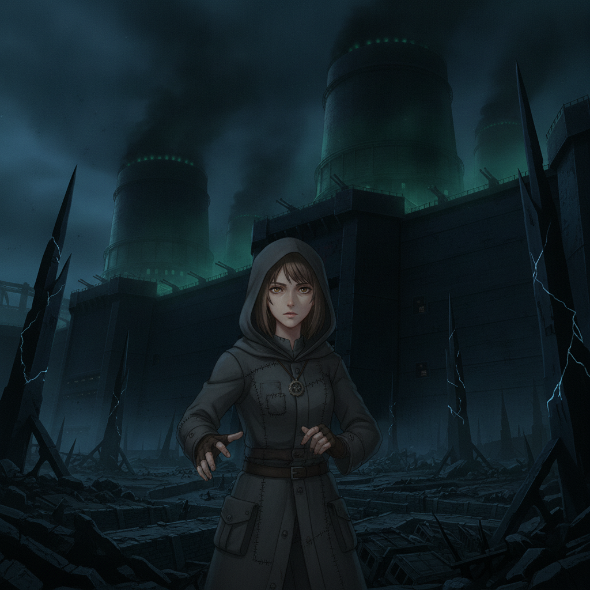
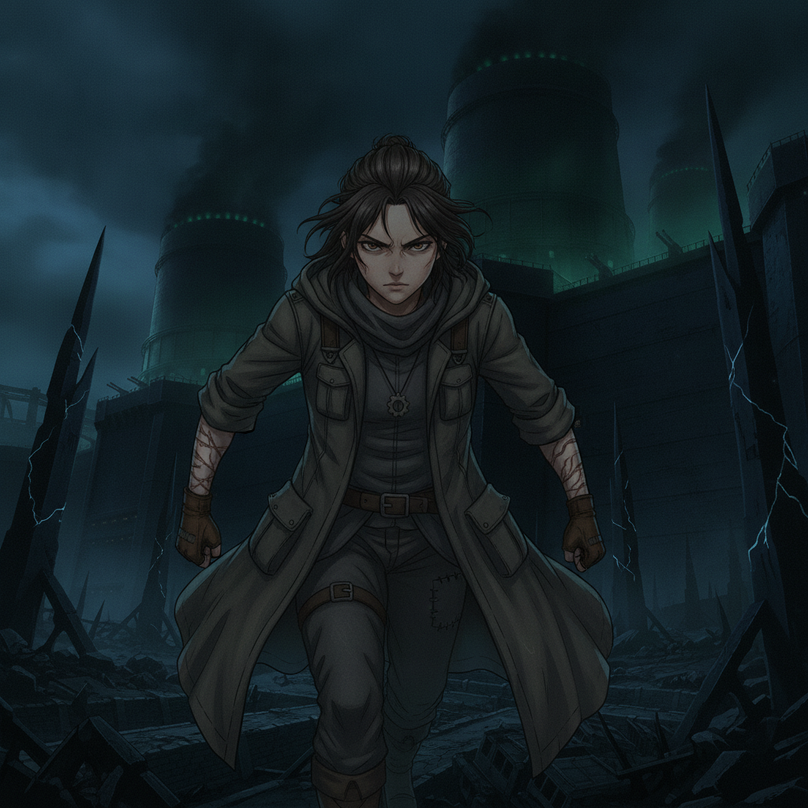
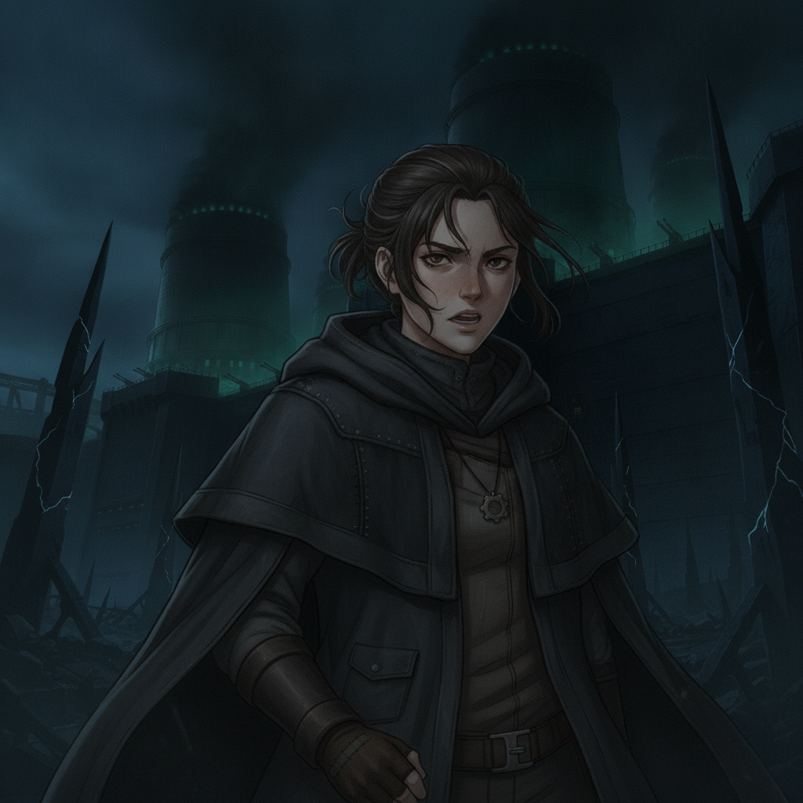
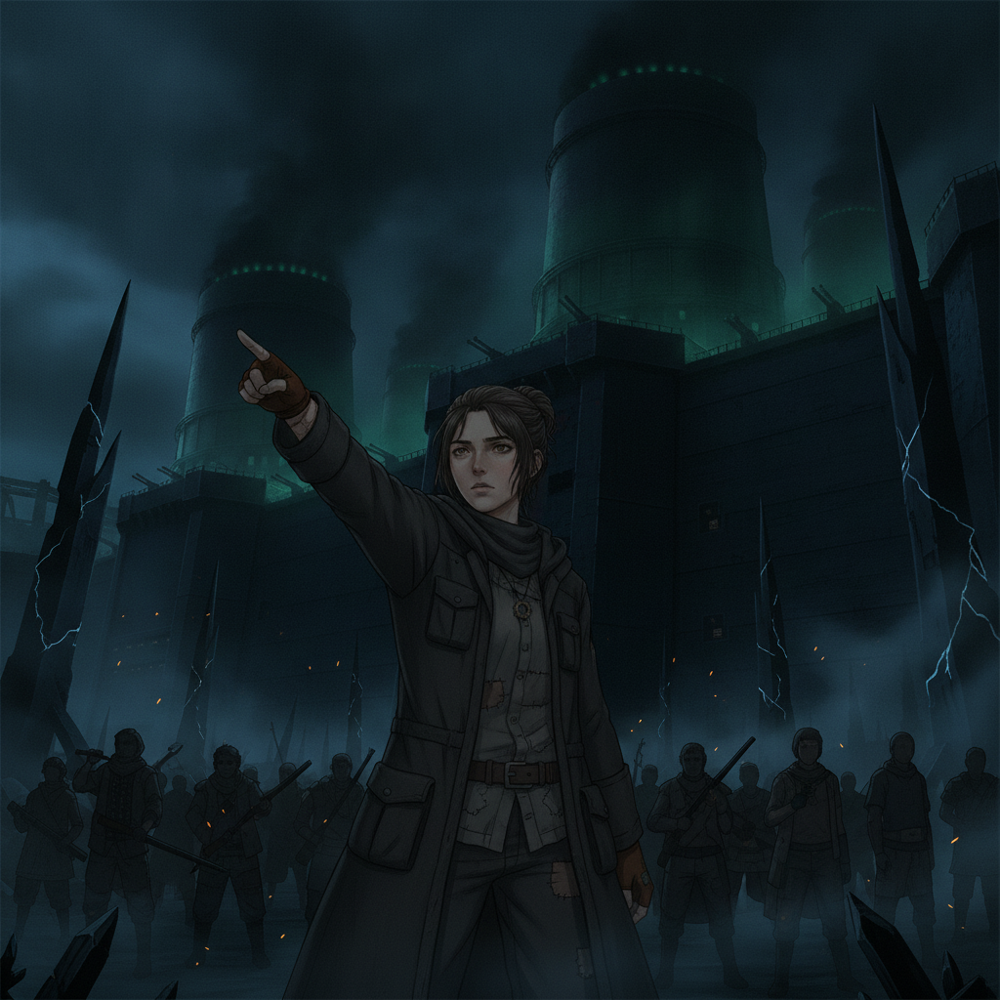

The Enemy Organization's outer works loom before us. With the Ashen Circle at our backs and Wren leading the way, we infiltrate the heart of the chaos, fighting through several set-piece battles.

Wren, usually so cautious, moves with a fierce determination. Her knowledge of clandestine paths and pressure points is invaluable. Her forbidden craft, once a means of survival, is now a weapon of liberation.

Wren Ashfield“They thought they could discard us. They thought we were broken. They were wrong.”

Our recruited allies—the scattered, the Rust-touched, the surviving pairs—all fight with a ferocity born of their own suffering. Wren, the fugitive, is now a general.
The infiltration is brutal, but every step forward is a victory for the unseen, the uncounted. We are a tide of the unwanted, rising to reclaim our world.